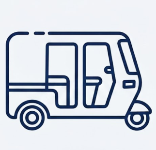

BOOK A JOURNEY
Let's plan
your route.
Select FareCare main fare points for a fixed fare. Optional intermediate stops help your driver locate you. The Ride Initiator’s private fare decreases when eligible Ride Joiners board, never below the shared-auto minimum.

LIVE MAP
Your location and nearby FareCare points
Allow location access to find the closest configured points. Map requires internet. Only configured FareCare stops appear. Nearby configured points are shown within 15 km. Actual roadside pickup requires driver route verification.
Loading map…
Enable location to restrict shared-auto pickups to 15 km.
TRIP DETAILS